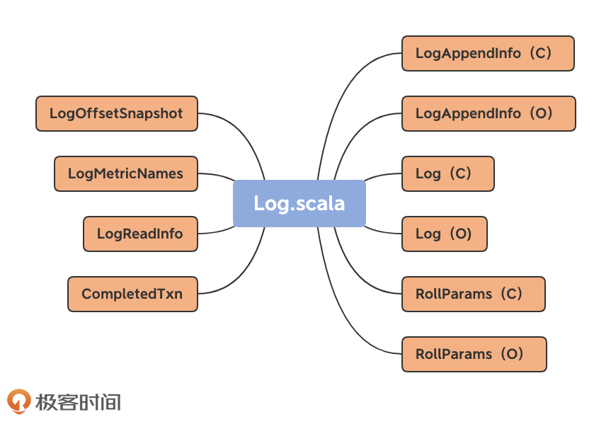
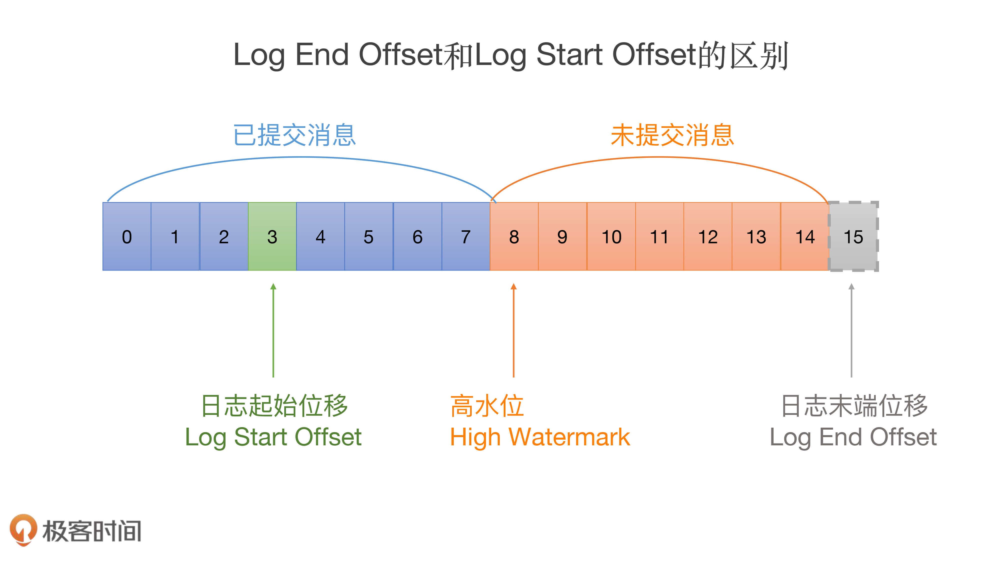
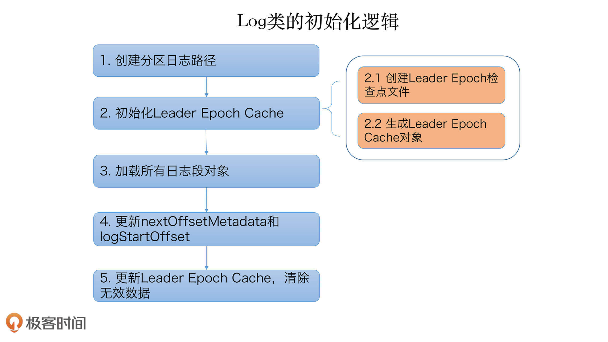
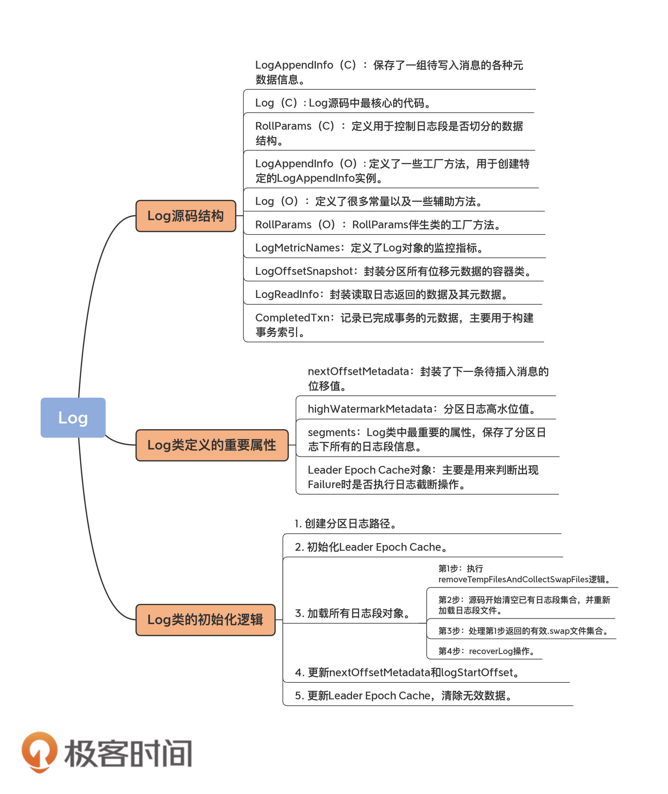

- 00 导读 构建Kafka工程和源码阅读环境、Scala语言热身.md.html
- 00 开篇词 阅读源码，逐渐成了职业进阶道路上的“必选项”.md.html
- 00 重磅加餐 带你快速入门Scala语言.md.html
- 01 日志段：保存消息文件的对象是怎么实现的？.md.html
- 02 日志（上）：日志究竟是如何加载日志段的？.md.html
- 03 日志（下）：彻底搞懂Log对象的常见操作.md.html
- 04 索引（上）：改进的二分查找算法在Kafka索引的应用.md.html
- 05 索引（下）：位移索引和时间戳索引的区别是什么？.md.html
- 06 请求通道：如何实现Kafka请求队列？.md.html
- 07 SocketServer（上）：Kafka到底是怎么应用NIO实现网络通信的？.md.html
- 08 SocketServer（中）：请求还要区分优先级？.md.html
- 09 SocketServer（下）：请求处理全流程源码分析.md.html
- 10 KafkaApis：Kafka最重要的源码入口，没有之一.md.html
- 11 Controller元数据：Controller都保存有哪些东西？有几种状态？.md.html
- 12 ControllerChannelManager：Controller如何管理请求发送？.md.html
- 13 ControllerEventManager：变身单线程后的Controller如何处理事件？.md.html
- 14 Controller选举是怎么实现的？.md.html
- 15 如何理解Controller在Kafka集群中的作用？.md.html
- 16 TopicDeletionManager： Topic是怎么被删除的？.md.html
- 17 ReplicaStateMachine：揭秘副本状态机实现原理.md.html
- 18 PartitionStateMachine：分区状态转换如何实现？.md.html
- 19 TimingWheel：探究Kafka定时器背后的高效时间轮算法.md.html
- 20 DelayedOperation：Broker是怎么延时处理请求的？.md.html
- 21 AbstractFetcherThread：拉取消息分几步？.md.html
- 22 ReplicaFetcherThread：Follower如何拉取Leader消息？.md.html
- 23 ReplicaManager（上）：必须要掌握的副本管理类定义和核心字段.md.html
- 24 ReplicaManager（中）：副本管理器是如何读写副本的？.md.html
- 25 ReplicaManager（下）：副本管理器是如何管理副本的？.md.html
- 26 MetadataCache：Broker是怎么异步更新元数据缓存的？.md.html
- 27 消费者组元数据（上）：消费者组都有哪些元数据？.md.html
- 28 消费者组元数据（下）：Kafka如何管理这些元数据？.md.html
- 29 GroupMetadataManager：组元数据管理器是个什么东西？.md.html
- 30 GroupMetadataManager：位移主题保存的只是位移吗？.md.html
- 31 GroupMetadataManager：查询位移时，不用读取位移主题？.md.html
- 32 GroupCoordinator：在Rebalance中，Coordinator如何处理成员入组？.md.html
- 33 GroupCoordinator：在Rebalance中，如何进行组同步？.md.html
- 特别放送（一）经典的Kafka学习资料有哪些？.md.html
- 特别放送（三）我是怎么度过日常一天的？.md.html
- 特别放送（二）一篇文章带你了解参与开源社区的全部流程.md.html
- 特别放送（五） Kafka 社区的重磅功能：移除 ZooKeeper 依赖.md.html
- 特别放送（四）20道经典的Kafka面试题详解.md.html
- 结束语 源码学习，我们才刚上路呢.md.html
- 捐赠
02 日志（上）：日志究竟是如何加载日志段的？
你好，我是胡夕。今天我来讲讲Kafka源码的日志（Log）对象。
上节课，我们学习了日志段部分的源码，你可以认为，日志是日志段的容器，里面定义了很多管理日志段的操作。坦率地说，如果看Kafka源码却不看Log，就跟你买了这门课却不知道作者是谁一样。在我看来，Log对象是Kafka源码（特别是Broker端）最核心的部分，没有之一。
它到底有多重要呢？我和你分享一个例子，你先感受下。我最近正在修复一个Kafka的Bug（KAFKA-9157）：在某些情况下，Kafka的Compaction操作会产生很多空的日志段文件。如果要避免这些空日志段文件被创建出来，就必须搞懂创建日志段文件的原理，而这些代码恰恰就在Log源码中。
既然Log源码要管理日志段对象，那么它就必须先把所有日志段对象加载到内存里面。这个过程是怎么实现的呢？今天，我就带你学习下日志加载日志段的过程。
首先，我们来看下Log对象的源码结构。
Log源码结构
Log源码位于Kafka core工程的log源码包下，文件名是Log.scala。总体上，该文件定义了10个类和对象，如下图所示：

那么，这10个类和对象都是做什么的呢？我先给你简单介绍一下，你可以对它们有个大致的了解。
不过，在介绍之前，我先提一句，图中括号里的C表示Class，O表示Object。还记得我在上节课提到过的伴生对象吗？没错，同时定义同名的Class和Object，就属于Scala中的伴生对象用法。
我们先来看伴生对象，也就是LogAppendInfo、Log和RollParams。
1. LogAppendInfo
- LogAppendInfo（C）：保存了一组待写入消息的各种元数据信息。比如，这组消息中第一条消息的位移值是多少、最后一条消息的位移值是多少；再比如，这组消息中最大的消息时间戳又是多少。总之，这里面的数据非常丰富（下节课我再具体说说）。
- LogAppendInfo（O）: 可以理解为其对应伴生类的工厂方法类，里面定义了一些工厂方法，用于创建特定的LogAppendInfo实例。
2. Log
- Log（C）: Log源码中最核心的代码。这里我先卖个关子，一会儿细聊。
- Log（O）：同理，Log伴生类的工厂方法，定义了很多常量以及一些辅助方法。
3. RollParams
- RollParams（C）：定义用于控制日志段是否切分（Roll）的数据结构。
- RollParams（O）：同理，RollParams伴生类的工厂方法。
除了这3组伴生对象之外，还有4类源码。
- LogMetricNames：定义了Log对象的监控指标。
- LogOffsetSnapshot：封装分区所有位移元数据的容器类。
- LogReadInfo：封装读取日志返回的数据及其元数据。
- CompletedTxn：记录已完成事务的元数据，主要用于构建事务索引。
Log Class & Object
下面，我会按照这些类和对象的重要程度，对它们一一进行拆解。首先，咱们先说说Log类及其伴生对象。
考虑到伴生对象多用于保存静态变量和静态方法（比如静态工厂方法等），因此我们先看伴生对象（即Log Object）的实现。毕竟，柿子先找软的捏！
object Log {
val LogFileSuffix = ".log"
val IndexFileSuffix = ".index"
val TimeIndexFileSuffix = ".timeindex"
val ProducerSnapshotFileSuffix = ".snapshot"
val TxnIndexFileSuffix = ".txnindex"
val DeletedFileSuffix = ".deleted"
val CleanedFileSuffix = ".cleaned"
val SwapFileSuffix = ".swap"
val CleanShutdownFile = ".kafka_cleanshutdown"
val DeleteDirSuffix = "-delete"
val FutureDirSuffix = "-future"
……
}
这是Log Object定义的所有常量。如果有面试官问你Kafka中定义了多少种文件类型，你可以自豪地把这些说出来。耳熟能详的.log、.index、.timeindex和.txnindex我就不解释了，我们来了解下其他几种文件类型。
- .snapshot是Kafka为幂等型或事务型Producer所做的快照文件。鉴于我们现在还处于阅读源码的初级阶段，事务或幂等部分的源码我就不详细展开讲了。
- .deleted是删除日志段操作创建的文件。目前删除日志段文件是异步操作，Broker端把日志段文件从.log后缀修改为.deleted后缀。如果你看到一大堆.deleted后缀的文件名，别慌，这是Kafka在执行日志段文件删除。
- .cleaned和.swap都是Compaction操作的产物，等我们讲到Cleaner的时候再说。
- -delete则是应用于文件夹的。当你删除一个主题的时候，主题的分区文件夹会被加上这个后缀。
- -future是用于变更主题分区文件夹地址的，属于比较高阶的用法。
总之，记住这些常量吧。记住它们的主要作用是，以后不要被面试官唬住！开玩笑，其实这些常量最重要的地方就在于，它们能够让你了解Kafka定义的各种文件类型。
Log Object还定义了超多的工具类方法。由于它们都很简单，这里我只给出一个方法的源码，我们一起读一下。
def filenamePrefixFromOffset(offset: Long): String = {
val nf = NumberFormat.getInstance()
nf.setMinimumIntegerDigits(20)
nf.setMaximumFractionDigits(0)
nf.setGroupingUsed(false)
nf.format(offset)
}
这个方法的作用是通过给定的位移值计算出对应的日志段文件名。Kafka日志文件固定是20位的长度，filenamePrefixFromOffset方法就是用前面补0的方式，把给定位移值扩充成一个固定20位长度的字符串。
举个例子，我们给定一个位移值是12345，那么Broker端磁盘上对应的日志段文件名就应该是00000000000000012345.log。怎么样，很简单吧？其他的工具类方法也很简单，我就不一一展开说了。
下面我们来看Log源码部分的重头戏：Log类。这是一个2000多行的大类。放眼整个Kafka源码，像Log这么大的类也不多见，足见它的重要程度。我们先来看这个类的定义：
class Log(@volatile var dir: File,
@volatile var config: LogConfig,
@volatile var logStartOffset: Long,
@volatile var recoveryPoint: Long,
scheduler: Scheduler,
brokerTopicStats: BrokerTopicStats,
val time: Time,
val maxProducerIdExpirationMs: Int,
val producerIdExpirationCheckIntervalMs: Int,
val topicPartition: TopicPartition,
val producerStateManager: ProducerStateManager,
logDirFailureChannel: LogDirFailureChannel) extends Logging with KafkaMetricsGroup {
……
}
看着好像有很多属性，但其实，你只需要记住两个属性的作用就够了：dir和logStartOffset。dir就是这个日志所在的文件夹路径，也就是主题分区的路径。而logStartOffset，表示日志的当前最早位移。dir和logStartOffset都是volatile var类型，表示它们的值是变动的，而且可能被多个线程更新。
你可能听过日志的当前末端位移，也就是Log End Offset（LEO），它是表示日志下一条待插入消息的位移值，而这个Log Start Offset是跟它相反的，它表示日志当前对外可见的最早一条消息的位移值。我用一张图来标识它们的区别：

图中绿色的位移值3是日志的Log Start Offset，而位移值15表示LEO。另外，位移值8是高水位值，它是区分已提交消息和未提交消息的分水岭。
有意思的是，Log End Offset可以简称为LEO，但Log Start Offset却不能简称为LSO。因为在Kafka中，LSO特指Log Stable Offset，属于Kafka事务的概念。这个课程中不会涉及LSO，你只需要知道Log Start Offset不等于LSO即可。
Log类的其他属性你暂时不用理会，因为它们要么是很明显的工具类属性，比如timer和scheduler，要么是高阶用法才会用到的高级属性，比如producerStateManager和logDirFailureChannel。工具类的代码大多是做辅助用的，跳过它们也不妨碍我们理解Kafka的核心功能；而高阶功能代码设计复杂，学习成本高，性价比不高。
其实，除了Log类签名定义的这些属性之外，Log类还定义了一些很重要的属性，比如下面这段代码：
@volatile private var nextOffsetMetadata: LogOffsetMetadata = _
@volatile private var highWatermarkMetadata: LogOffsetMetadata = LogOffsetMetadata(logStartOffset)
private val segments: ConcurrentNavigableMap[java.lang.Long, LogSegment] = new ConcurrentSkipListMap[java.lang.Long, LogSegment]
@volatile var leaderEpochCache: Option[LeaderEpochFileCache] = None
第一个属性nextOffsetMetadata，它封装了下一条待插入消息的位移值，你基本上可以把这个属性和LEO等同起来。
第二个属性highWatermarkMetadata，是分区日志高水位值。关于高水位的概念，我们在《Kafka核心技术与实战》这个课程中做过详细解释，你可以看一下[这篇文章]（下节课我还会再具体给你介绍下）。
第三个属性segments，我认为这是Log类中最重要的属性。它保存了分区日志下所有的日志段信息，只不过是用Map的数据结构来保存的。Map的Key值是日志段的起始位移值，Value则是日志段对象本身。Kafka源码使用ConcurrentNavigableMap数据结构来保存日志段对象，就可以很轻松地利用该类提供的线程安全和各种支持排序的方法，来管理所有日志段对象。
第四个属性是Leader Epoch Cache对象。Leader Epoch是社区于0.11.0.0版本引入源码中的，主要是用来判断出现Failure时是否执行日志截断操作（Truncation）。之前靠高水位来判断的机制，可能会造成副本间数据不一致的情形。这里的Leader Epoch Cache是一个缓存类数据，里面保存了分区Leader的Epoch值与对应位移值的映射关系，我建议你查看下LeaderEpochFileCache类，深入地了解下它的实现原理。
掌握了这些基本属性之后，我们看下Log类的初始化逻辑：
locally {
val startMs = time.milliseconds
// create the log directory if it doesn't exist
Files.createDirectories(dir.toPath)
initializeLeaderEpochCache()
val nextOffset = loadSegments()
/* Calculate the offset of the next message */
nextOffsetMetadata = LogOffsetMetadata(nextOffset, activeSegment.baseOffset, activeSegment.size)
leaderEpochCache.foreach(_.truncateFromEnd(nextOffsetMetadata.messageOffset))
logStartOffset = math.max(logStartOffset, segments.firstEntry.getValue.baseOffset)
// The earliest leader epoch may not be flushed during a hard failure. Recover it here.
leaderEpochCache.foreach(_.truncateFromStart(logStartOffset))
// Any segment loading or recovery code must not use producerStateManager, so that we can build the full state here
// from scratch.
if (!producerStateManager.isEmpty)
throw new IllegalStateException("Producer state must be empty during log initialization")
loadProducerState(logEndOffset, reloadFromCleanShutdown = hasCleanShutdownFile)
info(s"Completed load of log with ${segments.size} segments, log start offset $logStartOffset and " +
s"log end offset $logEndOffset in ${time.milliseconds() - startMs}
在详细解释这段初始化代码之前，我使用一张图来说明它到底做了什么：

这里我们重点说说第三步，即加载日志段的实现逻辑，以下是loadSegments的实现代码：
private def loadSegments(): Long = {
// first do a pass through the files in the log directory and remove any temporary files
// and find any interrupted swap operations
val swapFiles = removeTempFilesAndCollectSwapFiles()
// Now do a second pass and load all the log and index files.
// We might encounter legacy log segments with offset overflow (KAFKA-6264). We need to split such segments. When
// this happens, restart loading segment files from scratch.
retryOnOffsetOverflow {
// In case we encounter a segment with offset overflow, the retry logic will split it after which we need to retry
// loading of segments. In that case, we also need to close all segments that could have been left open in previous
// call to loadSegmentFiles().
logSegments.foreach(_.close())
segments.clear()
loadSegmentFiles()
}
// Finally, complete any interrupted swap operations. To be crash-safe,
// log files that are replaced by the swap segment should be renamed to .deleted
// before the swap file is restored as the new segment file.
completeSwapOperations(swapFiles)
if (!dir.getAbsolutePath.endsWith(Log.DeleteDirSuffix)) {
val nextOffset = retryOnOffsetOverflow {
recoverLog()
}
// reset the index size of the currently active log segment to allow more entries
activeSegment.resizeIndexes(config.maxIndexSize)
nextOffset
} else {
if (logSegments.isEmpty) {
addSegment(LogSegment.open(dir = dir,
baseOffset = 0,
config,
time = time,
fileAlreadyExists = false,
initFileSize = this.initFileSize,
preallocate = false))
}
0
}
这段代码会对分区日志路径遍历两次。
首先，它会移除上次Failure遗留下来的各种临时文件（包括.cleaned、.swap、.deleted文件等），removeTempFilesAndCollectSwapFiles方法实现了这个逻辑。
之后，它会清空所有日志段对象，并且再次遍历分区路径，重建日志段segments Map并删除无对应日志段文件的孤立索引文件。
待执行完这两次遍历之后，它会完成未完成的swap操作，即调用completeSwapOperations方法。等这些都做完之后，再调用recoverLog方法恢复日志段对象，然后返回恢复之后的分区日志LEO值。
如果你现在觉得有点蒙，也没关系，我把这段代码再进一步拆解下，以更小的粒度跟你讲下它们做了什么。理解了这段代码之后，你大致就能搞清楚大部分的分区日志操作了。所以，这部分代码绝对值得我们多花一点时间去学习。
我们首先来看第一步，removeTempFilesAndCollectSwapFiles方法的实现。我用注释的方式详细解释了每行代码的作用：
private def removeTempFilesAndCollectSwapFiles(): Set[File] = {
// 在方法内部定义一个名为deleteIndicesIfExist的方法，用于删除日志文件对应的索引文件
def deleteIndicesIfExist(baseFile: File, suffix: String = ""): Unit = {
info(s"Deleting index files with suffix $suffix for baseFile $baseFile")
val offset = offsetFromFile(baseFile)
Files.deleteIfExists(Log.offsetIndexFile(dir, offset, suffix).toPath)
Files.deleteIfExists(Log.timeIndexFile(dir, offset, suffix).toPath)
Files.deleteIfExists(Log.transactionIndexFile(dir, offset, suffix).toPath)
}
var swapFiles = Set[File]()
var cleanFiles = Set[File]()
var minCleanedFileOffset = Long.MaxValue
// 遍历分区日志路径下的所有文件
for (file <- dir.listFiles if file.isFile) {
if (!file.canRead) // 如果不可读，直接抛出IOException
throw new IOException(s"Could not read file $file")
val filename = file.getName
if (filename.endsWith(DeletedFileSuffix)) { // 如果以.deleted结尾
debug(s"Deleting stray temporary file ${file.getAbsolutePath}")
Files.deleteIfExists(file.toPath) // 说明是上次Failure遗留下来的文件，直接删除
} else if (filename.endsWith(CleanedFileSuffix)) { // 如果以.cleaned结尾
minCleanedFileOffset = Math.min(offsetFromFileName(filename), minCleanedFileOffset) // 选取文件名中位移值最小的.cleaned文件，获取其位移值，并将该文件加入待删除文件集合中
cleanFiles += file
} else if (filename.endsWith(SwapFileSuffix)) { // 如果以.swap结尾
val baseFile = new File(CoreUtils.replaceSuffix(file.getPath, SwapFileSuffix, ""))
info(s"Found file ${file.getAbsolutePath} from interrupted swap operation.")
if (isIndexFile(baseFile)) { // 如果该.swap文件原来是索引文件
deleteIndicesIfExist(baseFile) // 删除原来的索引文件
} else if (isLogFile(baseFile)) { // 如果该.swap文件原来是日志文件
deleteIndicesIfExist(baseFile) // 删除掉原来的索引文件
swapFiles += file // 加入待恢复的.swap文件集合中
}
}
}
// 从待恢复swap集合中找出那些起始位移值大于minCleanedFileOffset值的文件，直接删掉这些无效的.swap文件
val (invalidSwapFiles, validSwapFiles) = swapFiles.partition(file => offsetFromFile(file) >= minCleanedFileOffset)
invalidSwapFiles.foreach { file =>
debug(s"Deleting invalid swap file ${file.getAbsoluteFile} minCleanedFileOffset: $minCleanedFileOffset")
val baseFile = new File(CoreUtils.replaceSuffix(file.getPath, SwapFileSuffix, ""))
deleteIndicesIfExist(baseFile, SwapFileSuffix)
Files.deleteIfExists(file.toPath)
}
// Now that we have deleted all .swap files that constitute an incomplete split operation, let's delete all .clean files
// 清除所有待删除文件集合中的文件
cleanFiles.foreach { file =>
debug(s"Deleting stray .clean file ${file.getAbsolutePath}")
Files.deleteIfExists(file.toPath)
}
// 最后返回当前有效的.swap文件集合
validSwapFiles
}
执行完了removeTempFilesAndCollectSwapFiles逻辑之后，源码开始清空已有日志段集合，并重新加载日志段文件。这就是第二步。这里调用的主要方法是loadSegmentFiles。
private def loadSegmentFiles(): Unit = {
// 按照日志段文件名中的位移值正序排列，然后遍历每个文件
for (file <- dir.listFiles.sortBy(_.getName) if file.isFile) {
if (isIndexFile(file)) { // 如果是索引文件
val offset = offsetFromFile(file)
val logFile = Log.logFile(dir, offset)
if (!logFile.exists) { // 确保存在对应的日志文件，否则记录一个警告，并删除该索引文件
warn(s"Found an orphaned index file ${file.getAbsolutePath}, with no corresponding log file.")
Files.deleteIfExists(file.toPath)
}
} else if (isLogFile(file)) { // 如果是日志文件
val baseOffset = offsetFromFile(file)
val timeIndexFileNewlyCreated = !Log.timeIndexFile(dir, baseOffset).exists()
// 创建对应的LogSegment对象实例，并加入segments中
val segment = LogSegment.open(dir = dir,
baseOffset = baseOffset,
config,
time = time,
fileAlreadyExists = true)
try segment.sanityCheck(timeIndexFileNewlyCreated)
catch {
case _: NoSuchFileException =>
error(s"Could not find offset index file corresponding to log file ${segment.log.file.getAbsolutePath}, " +
"recovering segment and rebuilding index files...")
recoverSegment(segment)
case e: CorruptIndexException =>
warn(s"Found a corrupted index file corresponding to log file ${segment.log.file.getAbsolutePath} due " +
s"to ${e.getMessage}}, recovering segment and rebuilding index files...")
recoverSegment(segment)
}
addSegment(segment)
}
}
}
第三步是处理第一步返回的有效.swap文件集合。completeSwapOperations方法就是做这件事的：
private def completeSwapOperations(swapFiles: Set[File]): Unit = {
// 遍历所有有效.swap文件
for (swapFile <- swapFiles) {
val logFile = new File(CoreUtils.replaceSuffix(swapFile.getPath, SwapFileSuffix, "")) // 获取对应的日志文件
val baseOffset = offsetFromFile(logFile) // 拿到日志文件的起始位移值
// 创建对应的LogSegment实例
val swapSegment = LogSegment.open(swapFile.getParentFile,
baseOffset = baseOffset,
config,
time = time,
fileSuffix = SwapFileSuffix)
info(s"Found log file ${swapFile.getPath} from interrupted swap operation, repairing.")
// 执行日志段恢复操作
recoverSegment(swapSegment)
// We create swap files for two cases:
// (1) Log cleaning where multiple segments are merged into one, and
// (2) Log splitting where one segment is split into multiple.
//
// Both of these mean that the resultant swap segments be composed of the original set, i.e. the swap segment
// must fall within the range of existing segment(s). If we cannot find such a segment, it means the deletion
// of that segment was successful. In such an event, we should simply rename the .swap to .log without having to
// do a replace with an existing segment.
// 确认之前删除日志段是否成功，是否还存在老的日志段文件
val oldSegments = logSegments(swapSegment.baseOffset, swapSegment.readNextOffset).filter { segment =>
segment.readNextOffset > swapSegment.baseOffset
}
// 将生成的.swap文件加入到日志中，删除掉swap之前的日志段
replaceSegments(Seq(swapSegment), oldSegments.toSeq, isRecoveredSwapFile = true)
}
}
最后一步是recoverLog操作：
private def recoverLog(): Long = {
// if we have the clean shutdown marker, skip recovery
// 如果不存在以.kafka_cleanshutdown结尾的文件。通常都不存在
if (!hasCleanShutdownFile) {
// 获取到上次恢复点以外的所有unflushed日志段对象
val unflushed = logSegments(this.recoveryPoint, Long.MaxValue).toIterator
var truncated = false
// 遍历这些unflushed日志段
while (unflushed.hasNext && !truncated) {
val segment = unflushed.next
info(s"Recovering unflushed segment ${segment.baseOffset}")
val truncatedBytes =
try {
// 执行恢复日志段操作
recoverSegment(segment, leaderEpochCache)
} catch {
case _: InvalidOffsetException =>
val startOffset = segment.baseOffset
warn("Found invalid offset during recovery. Deleting the corrupt segment and " +
s"creating an empty one with starting offset $startOffset")
segment.truncateTo(startOffset)
}
if (truncatedBytes > 0) { // 如果有无效的消息导致被截断的字节数不为0，直接删除剩余的日志段对象
warn(s"Corruption found in segment ${segment.baseOffset}, truncating to offset ${segment.readNextOffset}")
removeAndDeleteSegments(unflushed.toList, asyncDelete = true)
truncated = true
}
}
}
// 这些都做完之后，如果日志段集合不为空
if (logSegments.nonEmpty) {
val logEndOffset = activeSegment.readNextOffset
if (logEndOffset < logStartOffset) { // 验证分区日志的LEO值不能小于Log Start Offset值，否则删除这些日志段对象
warn(s"Deleting all segments because logEndOffset ($logEndOffset) is smaller than logStartOffset ($logStartOffset). " +
"This could happen if segment files were deleted from the file system.")
removeAndDeleteSegments(logSegments, asyncDelete = true)
}
}
// 这些都做完之后，如果日志段集合为空了
if (logSegments.isEmpty) {
// 至少创建一个新的日志段，以logStartOffset为日志段的起始位移，并加入日志段集合中
addSegment(LogSegment.open(dir = dir,
baseOffset = logStartOffset,
config,
time = time,
fileAlreadyExists = false,
initFileSize = this.initFileSize,
preallocate = config.preallocate))
}
// 更新上次恢复点属性，并返回
recoveryPoint = activeSegment.readNextOffset
recoveryPoint
总结
今天，我重点向你介绍了Kafka的Log源码，主要包括：
- Log文件的源码结构：你可以看下下面的导图，它展示了Log类文件的架构组成，你要重点掌握Log类及其相关方法。
- 加载日志段机制：我结合源码重点分析了日志在初始化时是如何加载日志段的。前面说过了，日志是日志段的容器，弄明白如何加载日志段是后续学习日志段管理的前提条件。

总的来说，虽然洋洋洒洒几千字，但我也只讲了最重要的部分。我建议你多看几遍Log.scala中加载日志段的代码，这对后面我们理解Kafka Broker端日志段管理原理大有裨益。在下节课，我会继续讨论日志部分的源码，带你学习常见的Kafka日志操作。
课后讨论
Log源码中有个maybeIncrementHighWatermark方法，你能说说它的实现原理吗？
欢迎你在留言区畅所欲言，跟我交流讨论，也欢迎你把今天的内容分享给你的朋友。
© 2019 - 2023 Liangliang Lee. Powered by gin and hexo-theme-book.